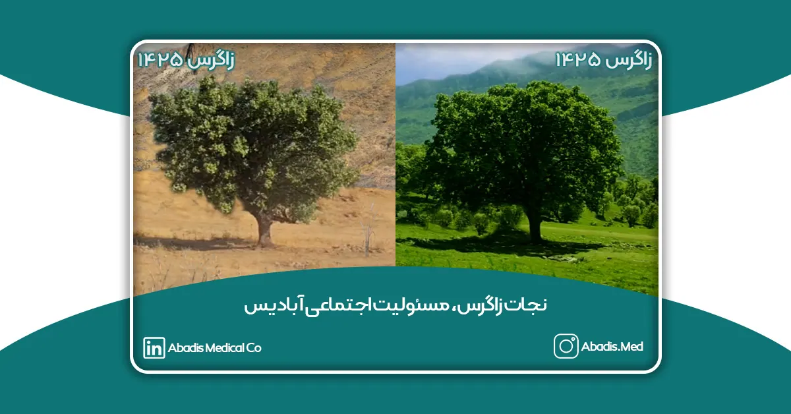

جنگلهای زاگرس بهعنوان یکی از مهمترین ذخایر اکولوژیکی کشور، طی سالهای گذشته به دلایل متعددی از جمله آتشسوزیهای گسترده، کشاورزی غیر اصولی و فعالیتهای انسانی، دچار خسارتهای جبرانناپذیری شدهاند. طبق آمار، تنها در سال ۱۳۹۵ بیش از ۷۵ مورد آتشسوزی منجر به نابودی حدود ۹۵۰ هکتار از جنگلهای زاگرس شد.
همایش نجات زاگرس فرصتی است برای طرح یک راهکار عملیاتی، ویژه ی جنگلهای زاگرس در راستای حفظ و نگهداری و احیاء جنگل های سوخته و جوان سازی جنگل های کهنسال. این راهکار از طریق کاشت هزارن نهال بلوط شروع می شود.
بدین جهت آبادیس قدم بزرگی در راستای مسئولیت اجتماعی خود برداشت و با همکاری شرکت ایدهپردازان نواندیش فردا با نام تجاری (Dpaper) برای نجات زاگرس به تعداد اعضای خانواده خود که بیش از 400 مرکز درمانی می باشد؛ با کاشت بلوط در روز درختکاری اثرگذاری خود را به طبیعت اثبات کرد و تا اردیبهشت سال 1403 به تعداد 1000 عدد میرساند تا در ارتفاعات زاگرس مکانی به نام آبادیس و به یاد صنعت سلامت کشور ثبت شود.
برای مشاهده شناسنامه بلوطها به لینک زیر مراجعه نمایید.
در تاریخ سهشنبه ۱۵ اسفندماه ۱۴۰۲، همزمان با روز درختکاری، همایش نجات زاگرس با حضور فعالان محیط زیست، متخصصان حوزه منابع طبیعی و حامیان این حرکت مردمی در مرکز همایشهای بینالمللی دانشگاه علم و فرهنگ برگزار شد. این رویداد بهصورت حضوری و آنلاین و با مشارکت حدود ۸۰۰ نفر از علاقهمندان و کنشگران حوزه محیط زیست برگزار گردید.
علاوه بر شرکت مخازن طبی آبادیس، شرکت شاتل، دیگر برندهای فعال بخش خصوصی و جمعی از هنرمندان مطرح کشور نیز از حامیان این رویداد و پروژه بزرگ کاشت بلوط در زاگرس بودند.
در این همایش، بزرگانی که دغدغه حفاظت از محیط زیست را دارند، به سخنرانی و تبادل نظر پرداختند و تأکید کردند که مشارکت صنایع در پویشهای محیطزیستی، گامی مهم در جهت توسعه پایدار است.
مدیران مخازن طبی آبادیس به پاس همکاری با مراکز درمانی از سالهای گذشته و همچنین اهدای لوح کاشت نهال بلوط در زاگرس به نام بیمارستانهای پیشرو در کنترل عفونت به صورت حضوری با روسا و مدیران بیمارستانها دیدار کردند.
این دیدارها مورد استقبال فراوان رؤسای بیمارستانها قرار گرفت؛ و رؤسای بیمارستانها برای همراهی و همدلی، پویش آبادیس در راستای حفظ محیط زیست و نجات زاگرس را حمایت کردند.
برای مشاهده کامل اخبار دیدار روسای آبادیس با مدیران بیمارستانها به این لینک مراجعه نمایید.
هچنین مجموعه آبادیس حامی کارزار درخواست نجات زاگرس که توسط انجمنهای دوستدار طبیعت در تاریخ ۳۰ تیر ماه ۱۴۰۳ آغاز شده است؛ میباشد. مدیران مجموعه آبادیس و پرسنل آن از این کارزار حمایت کرده و این کارزار را امضا نمودند. متن کارزار درخواست نجات زاگرس به شرح زیر است:
درخواست نجات زاگرس
جناب آقای دکتر پزشکیان
ریاست محترم جمهوری اسلامی ایران
با سلام و احترام و تبریک انتخاب شایسته جنابعالی به ریاست دولت چهاردهم،
قطعاً استحضار دارید که «زاگرس»، این کهن زیستگاه تمدن ایرانی، در معرض خطر جدی نابودی قرار دارد. آتشسوزیهای مهلک و پیاپی از کهگیلویه و بویراحمد و لرستان تا کرمانشاه و کردستان و آذربایجان، هر ساله هزاران میلیارد تومان خسارت به منابع ملی کشور وارد میآورد. با توجه به وابستگی حیات طبیعی ایران به جنگلهای زاگرس، اثرات مخرب این آتشسوزیها بهویژه در این جنگلها مشهودتر است.
۱. ذخایر زیرزمینی آب زاگرس، اصلیترین منابع آبی کشور را تشکیل میدهند و نفوذ و تجمع آب در این لایهها به واسطه جنگلها و پوشش گیاهی زاگرس ممکن میشود.
۲. جنگلهای زاگرس به عنوان فیلتر طبیعی برای جلوگیری از وزش غبار به ایران مرکزی و تعدیلکننده اکوسیستم حرارتی و رطوبتی کشور عمل میکنند. این جنگلها جذبکننده ابرهای بارانزا به تمام پهنه کشور هستند و ارزش آنها به عنوان بخشی از سرمایه ملی و ذخیرگاه حیاتی و گیاهی و جانوری کشور غیرقابل انکار است. هماکنون یک چهارم از سکونتگاههای شهری و روستایی ایران در دامنهها و دشتهای میانی زاگرس از آذربایجان تا خلیج فارس استقرار یافتهاند.
از شما و دولت دانشمحور جنابعالی تقاضا داریم بهطور فوری و کارشناسانه به این مسأله ورود کنید. برای همفکری با شما و دولت محترم، رئوس پیشنهادات ما به شرح زیر است:
۱. تجهیز ادارات منابع طبیعی استانهای حوزه زاگرس به ادوات و تجهیزات پیشرفته برای مقابله سریع با حریق.
۲. تهیه و تأمین هواپیماها و هلیکوپترهای آبپاش از شرکتهای داخلی و خارجی در فصل تابستان که در آمادهباش کامل برای ادارات منابع طبیعی یا مدیریت بحران استانها، به ویژه استان کرمانشاه، قرار گیرد.
۳. استفاده فوری از هلیکوپترهای در اختیار هلالاحمر، هوانیروز و سپاه برای اطفاء حریق جنگلها و تجهیز آنها در اختیار ادارات کل منابع طبیعی و سرجنگلداری قرار داده شود.
۴. به عنوان یک طرح اضطراری و پیشتاز، لازم است تعداد کافی پستهای اطفاء حریق و حفاظت از جنگلها با قابلیت پوشش منطقهای و تجهیزات کافی در مناطق خطرزا احداث شود. در مرحله اول، احداث ۱۰ پست در استان کرمانشاه ضروری به نظر میرسد.
۵. سازماندهی روستانشینان منطقه و تأمین تجهیزات لازم برای واکنش و مقابله سریع با آتشسوزیها و به رسمیت شناختن این تشکلها که به تجربه کارآیی خود را اثبات کردهاند، از جمله اقدامات اساسی و پیشگام خواهد بود.
۶. لازم است نقشه پهنهبندی خطر آتشسوزی برای استان کرمانشاه (و سایر استانهای حوزه زاگرس) تهیه شده و چگونگی واکنش و دسترسی سریع به این مناطق در هنگام بروز خطر آموزش داده شود.
۷. ادارات کل منابع طبیعی با همکاری مدیریت بحران استان باید برنامه ویژه مدیریت بحران آتشسوزی جنگلهای زاگرس را طی مطالعات تخصصی تهیه کرده و در آن ضمن پیشبینی و پیشنگری کافی، چگونگی اجرای اقدامات اطفاء و ایجاد موانع فیزیکی در مسیر حریقها را ارائه دهند.
۸. و سرانجام، علت اصلی آتشسوزیها خشکسالی و کمبود رطوبت در پهنه زاگرس است. با انتقال شاخه کوچکی از طرح انتقال آب سیروان سردسیری به حوزه زاگرس و ایجاد مقداری رطوبت، حیات گیاهی پوشش سبز زاگرس تداوم بهتری خواهد یافت. این پیشنهاد لازم است توسط وزارت نیرو، وزارت جهاد کشاورزی و سازمان جنگلها و مراتع کشور مورد مطالعه و اجرایی قرار گیرد.
در پایان، ما دست در دست شما برای نجات ایران رنجور و خسته، آماده هستیم.
با احترام و امید به اقدام مؤثر
برای حمایت و امضای این کارزار به این لینک مراجعه نمایید.